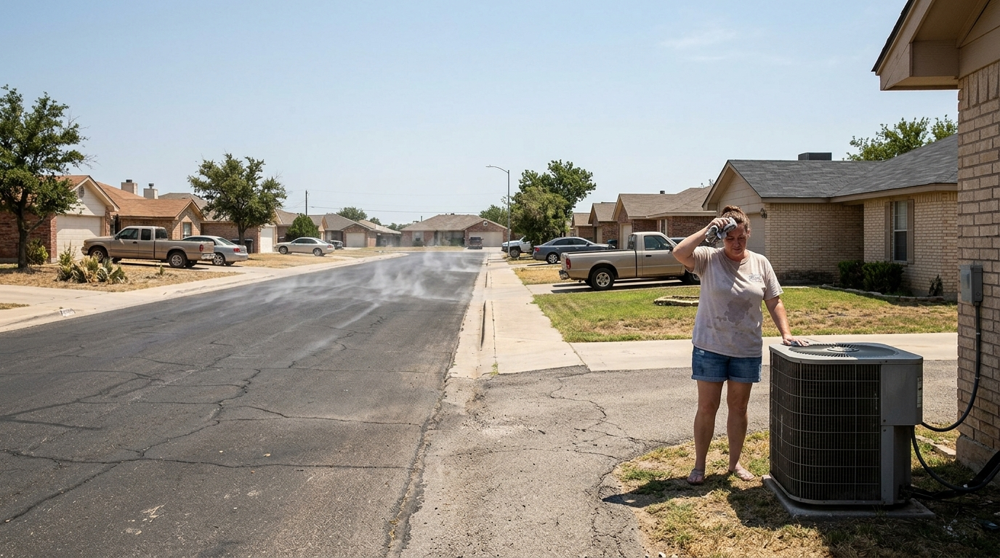
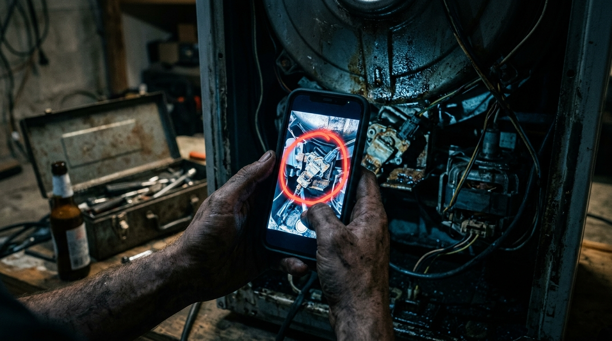
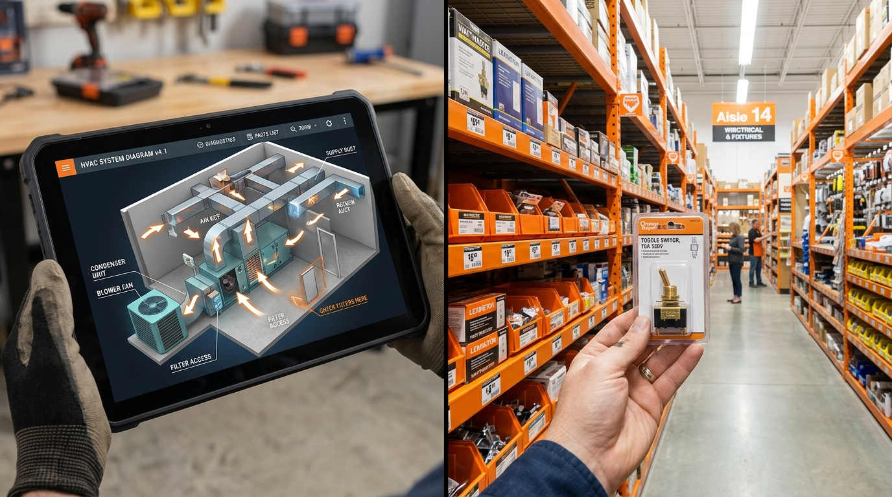
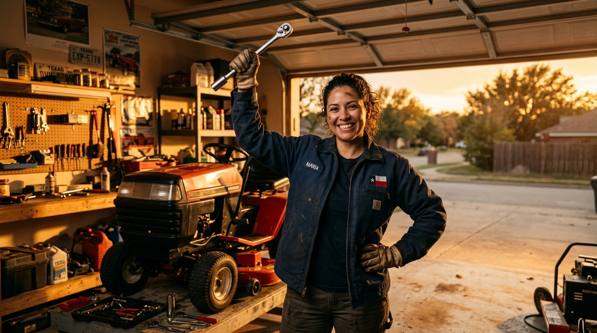

It’s 100 degrees in Bell County, your AC just died, and you know exactly what happens next.
You’ll wait three days for a guy in a van to show up, charge you a $150 'dispatch fee,' and quote you $1,200 for a $45 part.

The repair industry profits off keeping you in the dark. It’s time to take your power back.
Meet Listen & Fix.
It’s not just a repair guide; it’s your unfair advantage.

We pinpoint exactly what’s broken, walk you through the fix step-by-step, and tell you exactly which aisle at the Killeen Home Depot has the part in stock right now.
No more guessing.
No more getting ripped off.

Stop paying people to do what you’re entirely capable of doing yourself.
Grab your tools. We've got your back.
#RightToRepair
#SelfReliant
#KilleenTX
#TexasBuilt